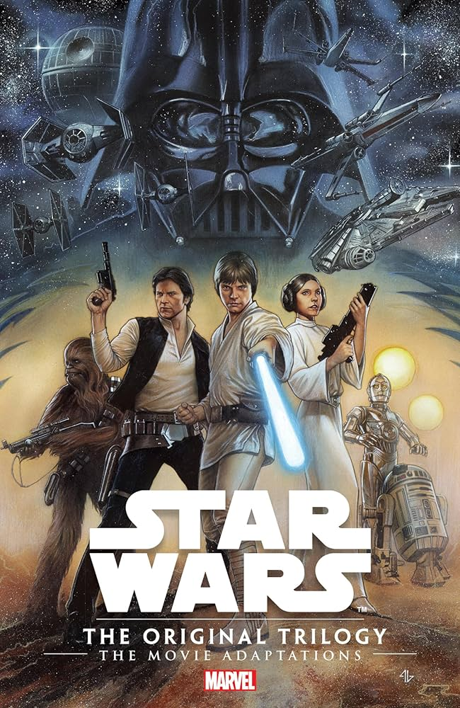

Star Wars
Star Wars: Yeni Bir Umut, İmparator'un dönüşü ve Jedi'ın Dönüşü, Luke Skywalker'ın Darth Vader ve İmparator'a karşı verdiği destansı mücadeleyi anlatır.
- Star Wars: Yeni Bir Umut (1977) "Luke Skywalker, Prenses Leia'yı kurtarıp Ölüm Yıldızı'nı yok etmek için Han Solo ve Obi-Wan Kenobi ile galaksiler arası bir maceraya atılır."
- Star Wars: İmparator (1980) "Luke Skywalker, Yoda'dan Jedi eğitimi alırken, Han Solo ve Prenses Leia, İmparatorluk güçlerinden kaçmak için mücadele eder."
- Star Wars: Jedi'ın Dönüşü (1983)"Luke Skywalker, Darth Vader'ı kurtarmak ve İmparator'u yenmek için son bir savaşa girerken, İsyan Güçleri Endor'da İmparatorluk'u alt eder."